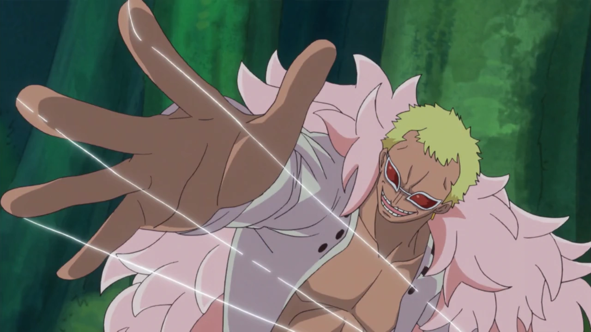
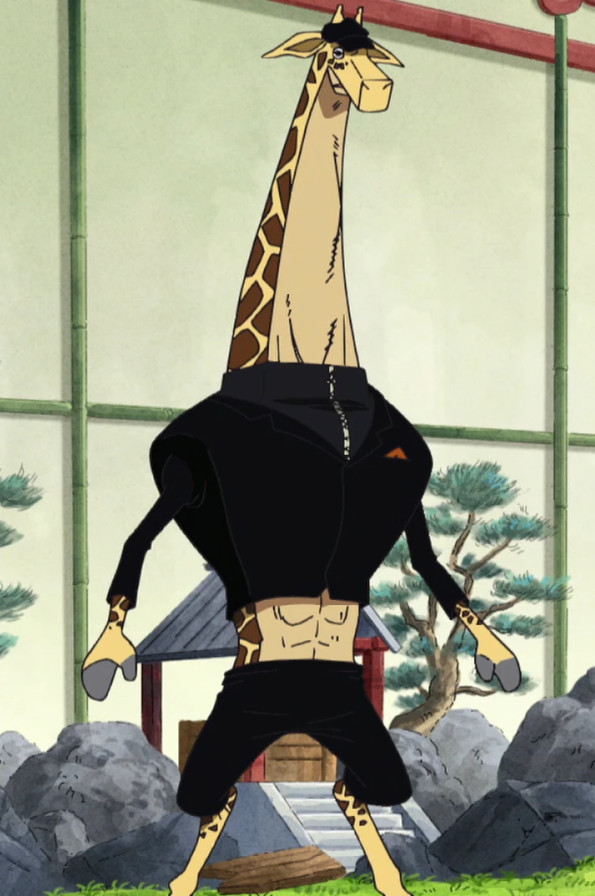

Devil Fruits
Devil Fruits are mysterious fruits that are found within the world of One Piece. These fruits grant those who eat them with superhuman powers and the permanent effect of not being able to swim. Each devil fruit is unique and there is no other like it. These fruits are broadly divided into three groups: Zoan - which allows the user to transform into an animal as well as a hybrid human/animal, Logia - grants a user the power to create, control, and transform themselves into a natural element, Paramecia - offers a vast array of strange abilities that do not fit into the other categories.
Types of Devil Fruits
| Type | Example | User and Powers | User Image |
|---|---|---|---|
| Paramecia | Ito Ito no Mi | Donquixote Doflamingo - Allows user to create and manipulate strings. |  |
| Zoan | Ushi Ushi no Mi, model: Giraffe | Kaku - Allows its user to transform into a hybrid giraffe and full giraffe at will. |  |
| Logia | Mera Mera no Mi | Portgas D. Ace - Fire manipulation |  |
Zoan Fruit Sub-Categories
| Sub-Category | Description |
|---|---|
| Ancient Zoans | Grants the user transformation abilities into ancient and extinct animals. |
| Mythical Zoans | Allows the user to transform into creatures of myth and legend, often with additional powers. |
| Artificial Zoans | Man-made Devil Fruits that grant Zoan-type powers, created through scientific means. Have a 10% chance of working. |